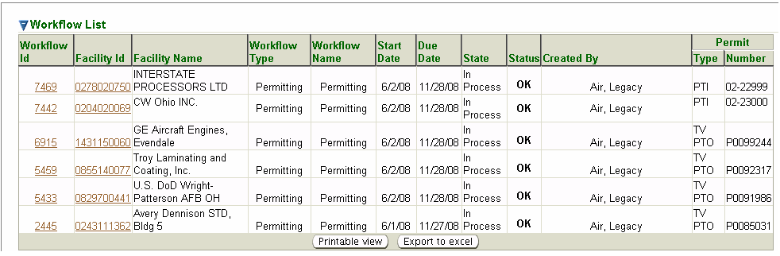

Workflow Search
is the initial page you see when you select the Workflow tab.
However, you may also get to the
Workflow Search page in the second-level menu from any page
within the Workflow
tab no matter how you reached that page. This is a
standard search page, as described in Common
Search Paradigm. The Search Criteria and
Result List for this search are described below.
You
may search for a workflow on the basis of any or all of the criteria
listed below. You can fill in or choose a value for whichever fields
you want to use to restrict your search.
Facility
ID–:
enter a FAC ID or a partial FAC ID and * or % in any position as a
wildcard (example: 012*, %012504, or *0125*, et) to filter for
workflow(s) for an individual facility or group of facilities.
Facility
Name–
enter the whole name or a partial name and * or % in any position
as wildcard (example: An*, %Anh, or *Anh*, etc.) to filter for
workflow(s) for an individual facility or group of facilities.
Workflow
Type– filters for only tasks
associated with workflows of the following specific types:
Emission Reporting; Permitting; Other; Info or Compliance
Reports. Info
filters for tasks not associated with a traditional workflow but with an Info workflow.
For example, if an emissions unit is shutdown or if a contact name
changes for a facility. Info
and Compliance
Reports workflows are contained in aggregate lists under
the Task
Profile page. Aggregate lists are discussed further below.
Workflow
Name– filters for only tasks
associated with workflows by Workflow
Name. For example, Facility
Changes/Miscellaneous is a Workflow
Name for the Info
Workflow Type; or Blue
Card Review is a Workflow
Name for the Emissions
Reporting Workflow Type.
Workflow
dates–
filters for workflows between the dates specified in the Start
Date from and to
fields. These fields may be specified by entering a date in
[m]m/[d]d/[yy]yy format or by selecting a date from the provided
next to the field.
Rush– filters for only
workflows which have the Rush
flag selected. This applies only to
Workflow Type searches for Permitting.
Created
By– filters for only
workflows which have been created due to an action
by the selected user (e.g., by submitting an application, the system
generates a workflow attributed to the submitter of the application).
Note: Air,
Legacy identifies a workflow generated by data migrated
from
an old system and Gateway,
Gateway identifies a workflow generated by
an external electronic submittal.
By
default, the search criteria are specified to select all workflows. You
may of course modify these values before you submit your search. The
more criteria you are able to specify, the more precise your search
will be. Broad searches can retrieve many records that can make it
difficult to hone in on the information you are really looking for. If,
for example, you submit a search with only the default criteria set,
you will get a record for every workflow for every facility in the
entire State of Ohio which has a relationship with the Ohio EPA
Division of Air Pollution Control. So, you should try to narrow your
search by specifying as many criteria as you can to identify the
workflow(s), you are really looking for.
After you complete the criteria for the search you want, and click on ,
the system searches all of the records for all the workflows stored in
its database, selects the ones that meet ALL of the
criteria you have
specified, and returns summary information about those workflows in a
datagrid. The datagrid below is the result of a search submitted with
search criteria specified to select all Permitting
(Workflow
Name)
workflows with a Start
Date from 6/1/2008 to
6/6/2008.

Workflow Search
Results Datagrid
The summary data returned includes columns providing Workflow
ID,
Facility ID, Facility Name, Workflow Type, Workflow Name,
Start Date,
Due Date, State, Status, Created By, (Permit) Type and (Permit)
Number
for all the workflows that match your search criteria. The following
summary data is further explained:
Workflow
Id – an ID number that was assigned by the system to the
individual workflow upon creation.
Start
Date – the date from which
processing time is calculated for the workflow. This date is set when
the workflow is created but it can be changed.
Due Date
– the date by
which the workflow is expected to be completed, system-calculated from
the Start
Date by adding the preprogrammed time allowance for the
task.
State
– one of the following workflow states is identified: In
Process, Completed, or N/A.
Status
– an indication of whether the
workflow is projected to be completed on time; it corresponds to the
color-coded timeline at the top of the Workflow
Diagram: OK
(on
time/green); Jeopardy
(nearing the deadline/yellow); or Late
(past the
deadline/red).
(Permit)
Type - for Permitting
workflows only, the
type of permit object currently identified for the permit (e.g., PTI or
PTIO).
(Permit)
Number – for Permitting
workflows only, the permit number
assigned to the permit object.
Note
that the data in the Workflow
Id and
Facility Id columns in the
datagrid are hyperlinks. If you click on either the
Workflow Id and
Facility
Id link in the datagrid, the system will take you to the
Workflow
Diagram or Facility
Profile page respectively for the Workflow
Id or Facility
Id that the link you selected references.
This datagrid
supports all the common functionality for datagrids as described in
Common User Interface
Elements - Datagrids.
Info
and
Compliance Reports workflows are contained in aggregate
lists
in the Task
Profile page. Unlike the ToDos
list search page, each
individual workflow in these aggregate lists are identified
individually when searched through the Workflow
Search function.
However, when accessing the Task
Profile, they will continue to be
displayed as an aggregate list.
Aggregate tasks contain a one step Info workflow
that can be dismissed
(removing it from your ToDos
list) by selecting the appropriate
checkbox on the Task
Profile page. Once dismissed, aggregate list tasks
are not retained as “completed” for searching later. However, the types
of task contained in the aggregate lists can be found in other
locations for the specific facility. For example, you can always see
all compliance
reports submitted by a facility from the third-level
menu Compliance
Report(s) of the
Facility Detail. Likewise, for
miscellaneous facility changes, such as changes in contact information
or emissions unit shutdowns, you can always see a log of events from
the third-level menu Event
Logs of the Facility
Profile.
For more Help
on dismissing ToDo
Tasks, or completing other tasks in a workflow,
refer to the Task
Profile Help page.
 provided
next to the field.
provided
next to the field.
 ,
,